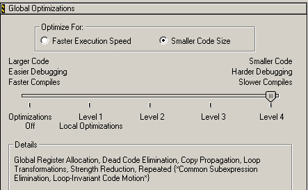
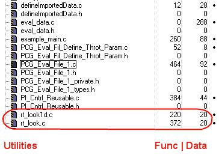

Evaluating the Generated Code
Overview: Reviews the build characteristics of the generated code. Provides RAM/ROM data for several model configurations.
Time: 15 minutes
Goals
Understand...
- How different configurations affect the RAM/ROM metric
Contents
Background on Code Evaluation
Generated code is evaluated based on two primary metrics: execution speed and memory usage. There is often, though not always, a tradeoff between execution speed and memory where faster execution requires more memory. Memory usage can be further classified into ROM (Read-only memory) and RAM (Random access memory).
There are tradeoffs between using RAM and ROM.
- Accessing data from RAM is faster than accessing ROM.
- Executables and data must be stored on ROM, because RAM does not maintain data between power cycles.
This module shows memory requirements divided into function and data components. Execution speed was not evaluated.
Compiler Information
The Freescale CodeWarrior was used in this evaluation. Details on the compiler appear below.
| Compiler | Version | Target Processor |
| Freescale CodeWarrior | v5.5.1.1430 | Power PC 565 |
Viewing the Code Metrics
As described in Integrating the Generated Code into the External Environment and Testing the Generated Code, the generated code may require the use of utility functions. The utility functions have a fixed overhead; their memory requirements is a one-time cost. Because of this, the data in this module shows memory usage for:
- Algorithms: The C code generated from the Simulink® diagrams and the data definition functions
- Utilities: Functions that are part of the Real-Time Workshop® library source
- Full: The sum of both the Algorithm and Utilities
Build Options Configuration
The same configuration options are used in all three evaluations. Freescale CodeWarrior was configured to minimize memory usage and apply all allowed optimizations.

Configuration 1: Reusable Functions Data Type Double
- Source files: PCG_Eval_File_1.zip
- Data Type: All doubles
- Included Data: All data required for the build is included in the project (including data defined as extern: pos_rqst, fbk_1, and fbk_2)
- Main Function: A modified version of example_main from Integrating the Generated Code into the External Environment
- Function Call Method: Reusable functions for the PI controllers

| Function | Data | |
| Full | 1764 bytes | 589 bytes |
| Algorithms | 1172 bytes | 549 bytes |
| Utilities | 592 bytes | 40 bytes |
Configuration 2: Reusable Functions Data Type Single
In this configuration, the data types for the model where changed from the default of double to single.
Model Configuration
- Source files: PCG_Eval_File_2.zip
- Data Type: All singles
- Included Data: All data required for the build is included in the project (including data defined as extern: pos_rqst, fbk_1, and fbk_2)
- Main Function: A modified version of example_main from Integrating the Generated Code into the External Environment
- Function Call Method: Reusable functions for the PI controllers
| Function | Data | |
| Full | 1392 bytes | 348 bytes |
| Algorithms | 800 bytes | 308 bytes |
| Utilities | 592 bytes | 40 bytes |
Comparing the memory used by the algorithms in the first configuration to the current configuration we see a large drop in the data memory, from 549 bytes to 308 bytes or 56 percent. The function size also decreased from 1172 to 800 bytes, or 68 percent. Running the simulation with data type set to single does not reduce the accuracy of the control algorithm, therefore this would be an acceptable design decision.
Configuration 3: Nonreusable Functions Data Type Single
- Source files: PCG_Eval_File_3.zip
- Data Type: All singles
- Included Data: All data required for the build is included in the project (including data defined as extern: pos_rqst, fbk_1, and fbk_2)
- Main Function: A modified version of example_main from Integrating the Generated Code into the External Environment
- Function Call Method: The function interface is void void. Data is passed by global parameters
| Function | Data | |
| Full | 1540 bytes | 388 bytes |
| Algorithms | 948 bytes | 348 bytes |
| Utilities | 592 bytes | 40 bytes |
The memory requirements for the third configuration are higher than the second configuration. Had the data type been double they would have been higher than the first configuration as well.